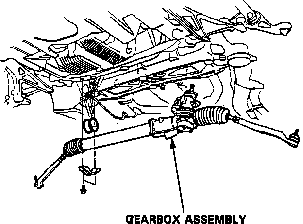

Removal and Installation
1. Disable coded theft protection system as described under Vehicle Damage Warnings.2. Disarm airbag system as described under Technician Safety information.
3. Raise and support front of vehicle.
4. Remove front wheels.
5. Remove ball joint assembly.
6. Remove underbody splash guard.
7. Drain power steering fluid into a suitable container.
8. Thoroughly clean steering gear unit and surrounding area.
9. Remove RH side hoses and clamps.
10. Disconnect control unit four lines.
11. Remove steering gear pipe clamps.
12. Remove steering joint bolt, then separate steering gear pinion shaft and column shaft.
Fig. 30 Steering Gear Replacement:

13. Remove steering gear attaching bolts, then remove, Fig. 30.
14. Reverse procedure to install.
15. Restore coded theft protection system as outlined under Vehicle Damage Warnings.
16. Rearm airbag system as outlined under Technician Safety Information.